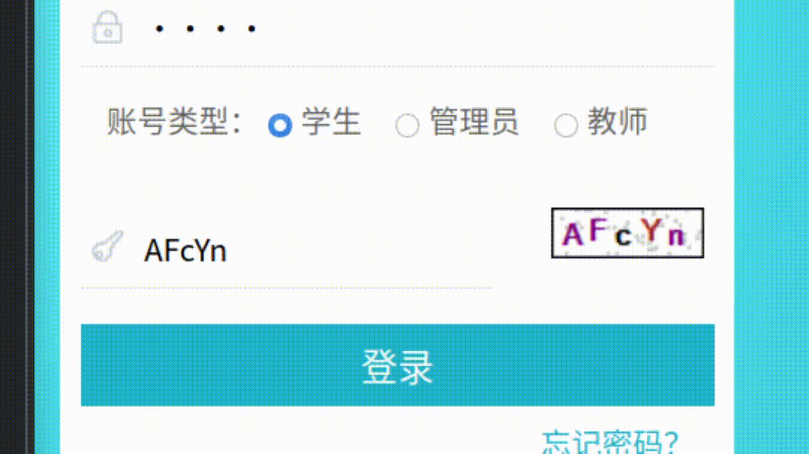

tampermonkey验证码识别¶
首先安装tesseract。
参考： Installation
编译安装方法
通过pip安装pytesseract
后台：
#!/usr/bin/env python
# ocr backend
import asyncio
import websockets
import base64
from io import BytesIO
from PIL import Image
import pytesseract
async def get_ocr(websocket, _):
while True:
# base64 encoded img file
data = await websocket.recv()
seq = 'base64,'
pos = data.find(seq) + len(seq)
x = base64.b64decode(data[pos:])
# img file
img = Image.open(BytesIO(x))
# result
a = pytesseract.image_to_string(img)
out = a.strip().replace(" ", "")
print(out)
await websocket.send(out)
start_server = websockets.serve(get_ocr, "127.0.0.1", 5678)
asyncio.get_event_loop().run_until_complete(start_server)
asyncio.get_event_loop().run_forever()
参考:
tampermonkey userjs:
(function () {
'use strict';
// get document element from xpath
// code from stackoverflow
function get_elem(a) {
return document.evaluate(a, document, null,
XPathResult.FIRST_ORDERED_NODE_TYPE, null).singleNodeValue;
}
// encode img to base64
// see: ref 3
function imgToBase64(img, dom) {
const canvas = document.createElement('canvas');
const ctx = canvas.getContext('2d');
canvas.width = img.width;
canvas.height = img.height;
ctx.drawImage(img, 0, 0);
// used for test canvas content
// dom.appendChild(canvas);
let data = "";
data = canvas.toDataURL();
return data;
}
var checkcode_dom = get_elem('//*[@id="checkcode_img"]');
let checkcode_input = get_elem('//*[@id="checkcode"]');
// get various elements
let close_popup = get_elem('/html/body/div[5]/div[1]');
// closing the annoying banner
if (close_popup != null) {
close_popup.click();
}
var dom = get_elem('//*[@id="yzm"]');
dom.style = "";
let username = get_elem('//*[@id="username"]');
let password = get_elem('//*[@id="password"]');
let login_btn = get_elem('//*[@id="login"]');
if (username != null && password != null && login_btn != null) {
// // fill login form
username.value = "test";
password.value = "test";
}
// about websocket, see ref 2
var ws = new WebSocket("ws://127.0.0.1:5678/");
ws.onmessage = function (event) {
let data = event.data;
console.log(data);
checkcode_input.value = data;
// login_btn.click();
}
var a = 1;
// specific dom loaded
// ref: [1]
var observer = new MutationObserver(function (mutationRecords) {
console.log("change detected");
let encodeded = imgToBase64(checkcode_dom, dom);
ws.send(encodeded);
if (a == 1) {
console.log('add image onload trigger');
checkcode_dom.onload = function () {
let encodeded = imgToBase64(checkcode_dom, dom);
ws.send(encodeded);
}
a = 0;
}
});
observer.observe(get_elem('//*[@id="divNotice"]'), { childList: true });
})();
参考：
效果（2倍速）：

可以看到，识别并不是十分准确。